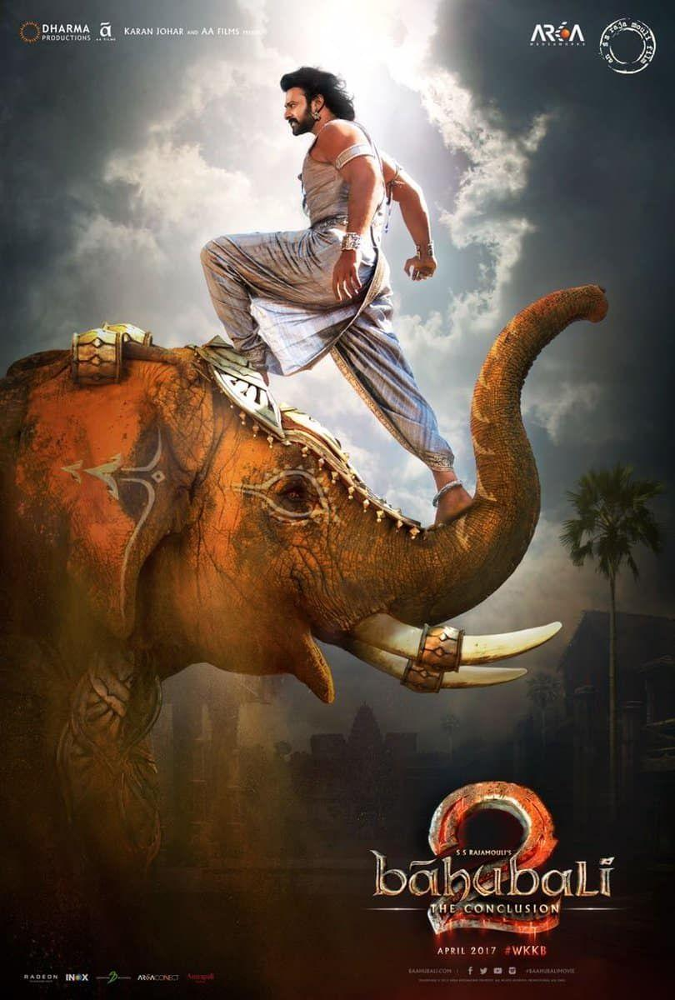

The film,directed by S.S.Rajamouli is a sequel to bahubali the beginning and completes the saga of amarendra bahubali and his son shivudu. The story unravels the mystey of why Bahubali was killed,while highlighting the heroic deeds of amarendraBahubali and the treachery of his cousin Bhallaladeva.The narrative spans two generations and three kingdoms,creating a rich tapestry of political intrigue,family loyalty and legendary heroism.Critics have noted that Rajamouli skillfully balance action,drama,and emotional arcs across this expansive story, keeping audiance engaged throughout the three hour runtime
S.S.Rajamouli